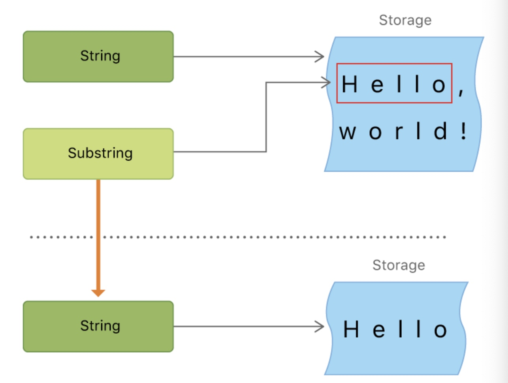

字符串是字符的集合,用string类型表示. 一个String的内容可以用许多方式读取，例如作为包括作为Character值的集合的方式
Swift的String和Character类型提供了快速和兼容Unicode的方式供代码使用。
String 类型是一种快速、现代化的字符串实现。 每一个字符串都是由编码无关的Unicode字符组成，并支持访问字符的多种Unicode表示形式
注意
Swift的String类型 与 Foundation的NSString类型可以无缝桥接。
Foundation对String扩展，使其可以访问NSString类型中定义的方法。
这意味着可以直接调用NSString方法，而无需进行任何类型转换
字符串字面量
//someString 常量通过字符串字面量进行初始化
let someString = "Some string literal value"
多行字符串字面量
三个双引号包括这具有稳定属性的文本字符集合
let quotation = """
The White Rabbit put on his spectacles. "Where shall I begin,
please your Majesty?" he asked.
"Begin at the beginning," the King said gravely, "and go on
till you come to the end; then stop."
"""
如果多行字符串中包含换行符的话，则多行字符串字面量也会包含换行符。
可以通过在行末尾添加反斜杠\作为续行符
字符串字面量的特殊字符
特殊字符主要有：
- 转义字符
\0、反斜杠\\、水平制表符\t、换行符\n、回车符\r、双引号"、单引号\' - Unicode标量，写法为
\u{n}(u为小写)，n为任意一到八位十六进制数且可用的unicode码
let wiseWords = "\"Imagination is more important than knowledge\" - Einstein"
// "Imageination is more important than knowledge" - Enistein
let dollarSign = "\u{24}" // $，Unicode 标量 U+0024
let blackHeart = "\u{2665}" // ♥，Unicode 标量 U+2665
let sparklingHeart = "\u{1F496}" // 💖，Unicode 标量 U+1F496
由于多行字符串字面量使用了三个双引号，所以可以再多行字符串字面量直接使用双引号而不用加转义符。
let threeDoubleQuotes = """
Escaping the first quote \"""
Escaping all three quotes \"\"\"
"""
扩展字符串分隔符
将字符串文字放在扩展分隔符中，字符串的特殊字符会被直接包含而非转义后的效果
如果想要在扩展分隔符中的文字有特殊效果，可以在转义字符后添加与其实位置个数相匹配的#符
扩展分隔符也可以用于多行字符串文字
＃"Line 1 \nLine 2"＃ //打印的为\n而非换行符
＃"Line 1 \#nLine 2"＃ //实现换行效果
###"Line1 \###nLine2"### //实现换行效果
let threeMoreDoubleQuotationMarks = #"""
Here are three more double quotes: """
"""#
初始化空字符串
var emptyString = "" // 空字符串字面量
var anotherEmptyString = String() // 初始化方法
if emptyString.isEmpty {
print("Nothing to see here")
}
// 打印输出："Nothing to see here"
字符串可变性
//通过指定为变量使其可修改
var variableString = "Horse"
variableString += " and carriage"
// variableString 现在为 "Horse and carriage"
与OC中的NSString和NSMutableSting确定是否可更改不同,Swift中类似其他值取决于其被定义为常量还是变量
字符串是值类型
Swift的String类型是值类型。如果您创建了一个新的字符串，那么当其进行常量、变量赋值操作，或在函数/方法中传递时，会进行值拷贝。任何情况下，都会对已有字符串值创建新副本，并对该新副本进行传递或赋值操作。这样保证了在函数/方法中传递的是字符串的值不会被修改，除非你自己去修改它。
在实际编译时，Swift 编译器会优化字符串的使用，使实际的复制只发生在绝对必要的情况下，这意味着您将字符串作为值类型的同时可以获得极高的性能。
注意:
Swift的String是值类型而NSString是引用类型,NSString的意思是初始化了一个指针指向了这个字符串，但SwiftString的意思则是把字符串字面量赋值给变量
使用字符
可通过for-in循环来遍历字符串中的characters 属性来获取每一个字符的值
for character in "Dog!?".characters {
print(character)
}
//
//声明一个Character类型
let exclamationMark: Character = "!"
//用character类型数组初始化字符串
let catCharacters: [Character] = ["C", "a", "t", "!", "?"]
let catString = String(catCharacters)
print(catString)
连接字符串和字符
字符串可以通过加法相加在一起
可以通过+=运算符将一个字符串添加到一个已经存在字符串变量上
let string1 = "hello"
let string2 = " there"
var welcome = string1 + string2
var instruction = "look over"
instruction += string2
可以用append()方法将一个字符附加到一个字符串变量的尾部
//初始化字符也是用双引号
let exclamationMark: Character = "!"
welcome.append(exclamationMark)
// welcome 现在等于 "hello there!"
注意
不能将一个字符串或者字符添加到字符变量上，因为字符变量只能包含一个字符
初始化字符也是用双引号与c中使用单引号不同
字符串插值
可以用以反斜线为前缀的圆括号将常量、变量或表达式插入字符串字面量或者多行字符串字面量之中
let multiplier = 3
let message = "\(multiplier) times 2.5 is \(Double(multiplier) * 2.5)"
// message 是 "3 times 2.5 is 7.5"
注意
插值字符串中写在括号内的表达式不能包含非转义反斜杠 ()，并且不能包含回车或换行符。不过，插值字符串可以包含其他字面量。
Unicode
Swift 的 String 和 Character 类型是完全兼容 Unicode 标准的。
Unicode标量
Unicode标量是对应字符或者修饰符的唯一的21位数字
Unicode 码位(code poing) 的范围是 U+0000 到 U+D7FF 或者 U+E000 到 U+10FFFF
Unicode 标量不包括 Unicode 代理项(surrogate pair) 码位，其码位范围是 U+D800 到 U+DFFF 。
不是所有的21位Unicode标量都代表一个字符，因为有一些标量是留作未来分配的。
可扩展的字形群集
每一个Swift的Character类型代表一个可扩展的字形群。一个可扩展的字形群是一个或多个可生成人类可读的字符 Unicode 标量的有序排列。
/*
字母 é 可以用单一的 Unicode 标量 é (U+00E9)来表示
一个标准的字母e(U+0065)加上一个急促重音的标量(U+0301)，这样一对标量就表示了同样的字母é
*/
let eAcute: Character = "\u{E9}" // é
let combinedEAcute: Character = "\u{65}\u{301}" // e 后面加上 ?
// eAcute 是 é, combinedEAcute 是 é
因此我们可以用很多复杂的脚本字符来表示单一的Character值
可扩展字形集是一个将许多复杂的脚本字符表示为单个字符值的灵活方式。
例如
/*
可拓展的字符群集可以使包围记号的标量包围其他Unicode标量，作为一个单一的Character值
*/
let enclosedEAcute: Character = "\u{20DD}"//"⃝"
let enclosedEAcute11: Character = "\u{E9}\u{20DD}"//é⃝
计算字符数量
通过字符串的count属性获取Character值的数量
注意:
我们在使用可拓展的字符群集作为Character值来连接或改变字符串时不一定会改变字符数量
var word = "cafe"//这时候字符数量是4
word += "\u{301}" //这时候字符数量还是4 因为e和新增的字符组合为é
let eAcute = "\u{00E9}" // é
eAcute.characters.count //字符数量为1
let combinedEAcute = "\u{65}\u{301}" //
combinedEAcute.characters.count //字符数量为1
注意：
可扩展的字形群集可以由多个Unicode标量组成。这意味着不同的字符以及相同字符的不同表示方式可能需要不同数量的内存空间来存储。所以Swift中的字符在一个字符串中并不一定占用相同的内存空间数量。因此，在没有获取字符串中的可扩展的字符群范围时，就不能计算出字符串的字符数量。如果在正在入里一个长字符串，需要注意count属性必须遍历全部的unicode标量，来确定字符串的字符数量
另外需要注意的时通过count属性返回的字符数量并不总是与包括相同字符的NSString的Length属性相同。NSString的length属性是利用UTF-16表示的十六位代码单元数字，而不是Unicode可扩展字符群集。作为佐证，当一个 NSString 的 length 属性被一个Swift的 String 值访问时，实际上是调用了
utf16Count
访问和修改字符串
字符串索引
String.Index对应着字符串中的每一个Character的位置
因为字符串中每个Character是可扩展的字符群集,所以想要知道character的人确切位置就像从String开头遍历每一个Unicode标量直到结尾才行。因此，Swift字符串不能用整数做索引
startIndex属性可以获取一个String的第一个Character的索引
endIndex属性可以可以获取最后一个Character的后一个位置的索引。因此endIndex属性不能作为一个字符串的有效下标。如果String是空串，startIndex和endIndex是相等的
可以使用String的index(before:)或index(after:)来获取前一个或者后一个,或者用index(:_offsetBy:)取得对应偏移量的索引
获取对应下标索引的字符:
let greeting = "Guten Tag!"
greeting[greeting.startIndex]// G
greeting[greeting.index(after: greeting.endIndex)]// !
//当越界是或引发运行时的错误(可以在编译时就检测出来)
使用characters属性的indices属性会创建一个包含全部索引的范围(Range)，用来在一个字符串中访问单个字符
for index in greeting.characters.indices {
print("\(greeting[index]) ", terminator: "")
}
// 打印输出 "G u t e n T a g ! "
我们在上面在
String中获取的index的方法,可以用于在任意一个确认的并遵循Collection协议的类型里面(例如Array、Dictionary、Set)
插入和删除
调用insert(_:at:)方法可以在一个字符串的指定索引插入一个字符，调用insert(contentsOf:at:)方法可以在一个字符串的指定索引插入一个段字符串。
//注意必须是变量
var welcome = "hello"
welcome.insert("!", at: welcome.endIndex)
// welcome 变量现在等于 "hello!"
welcome.insert(contentsOf:" there".characters, at: welcome.index(before: welcome.endIndex))
// welcome 变量现在等于 "hello there!"
调用remove(at:)方法可以在一个字符串的指定索引删除一个字符，调用removeSubrange(_:)方法可以在一个字符串的指定索引删除一个子字符串。
welcome.remove(at: welcome.index(before: welcome.endIndex))
// welcome 现在等于 "hello there"
let range = welcome.index(welcome.endIndex, offsetBy: -6)..<welcome.endIndex
welcome.removeSubrange(range)
// welcome 现在等于 "hello"
insert(_:at:)、insert(contentsOf:at:)、remove(at:)和removeSubrange(_:)方法在任意一个确认的并遵循RangeReplaceableCollection协议的类型里面，如上文所示是使用在String中，您也可以使用在Array、Dictionary和Set中。
子字符串
let greeting = "Hello, world!"
let index = greeting.firstIndex(of: ",") ?? greeting.endIndex
let beginning = greeting[..<index]
// beginning 的值为 "Hello"
// 把结果转化为 String 以便长期存储。
let newString = String(beginning)
当从String中获取一个SubString实例。Swift中的SubString绝大部分函数和String相同，可以使用相同的方式去操作。但是，与String不同的是，SubString只适合短时间操作字符串。
类似String，每个SubString也会在内存中保存字符集。而String和SubString的区别在性能优化上，SubString可以重用原String的内存空间或者另一个SubString的内存空间(String也有相同的优化，短时如果共享内存的话两者就会想等)。这对子字符串的优化意味着在修改String或者SubString之前都不需要去复制消耗内存。但是这也导致一个问题，因为SubString重用了原有内存的空间，原String的内存空间必须保留到SUbString不在使用为止

比较字符串
字符串/字符相等
直接用 == 和 !=进行比较
判断标准等于的标准是:当有同样的语义和外观,就被认为是相等的,即使他们的可扩展字形群集可能由不同的Unicode标量构成
例如:
((U+00E9)标准等于((U+0065)(U+0301))) (都是é表示的有效方式)
U+0041(英语中的A)不等于U+0410(俄语中的A)尽管外观看着一样
前缀/后缀
通过字符串的hasPrefix(_:) / hasSuffix(_:)方法来检查字符串是否用于特定前缀/后缀
字符串的Unicode表示
当Unicode字符串写进文本文件或者其他存储时，Unicode会用几种编码格式编码(如：UTF-8 UTF-16 UTF-32) 每一个字符串中的小块编码都被称代码单元
除了前面说过的用for-in对字符串遍历,然后访问每个character值的方式外:
其他三种Unicode兼容方式访问字符串
- UTF-8 代码单元集合 (利用字符串的
utf8属性进行访问) - UTF-16 代码单元集合 (利用字符串的
utf16属性进行访问) - 21位的Unicode标量值集合，也就是字符串的UTF-32编码格式 (利用字符串的
unicodeScalars属性进行访问)
let dogString = "Dog‼🐶"(其中“!!”为U+203C 🐶为U+1F436)
UTF-8表示
通过遍历String的utf8属性来访问它的UTF-8表示， 其为String.UTF8View类型的属性， UTF8View是无符号8位(UInt8)值的集合，每一个UInt8值都是一个字符的UTF-8表示
for codeUnit in dogString.utf8 {
print("\(codeUnit) ", terminator: "")
}
print("")// 68 111 103 226 128 188 240 159 144 182
/*
前三个10进制 codeUnit 值 ( 68 , 111 , 103 ) 代表了字符 D 、 o 和 g ，它们的 UTF-8 表示与ASCII 表示相同。
接下来的三个10进制 codeUnit 值 ( 226 , 128 , 188 ) 是 DOUBLE
EXCLAMATION MARK 的3字节 UTF-8 表示。
最后的四个 codeUnit 值 ( 240 , 159 , 144 , 182 ) 是 DOG FACE 的4字节UTF-8 表示。
*/
UTF-16表示
与utf-8类似,访问其utf-16属性,是String.UTF16View类型(UInt16值集合)
for codeUnit in dogString.utf16 {
print("\(codeUnit) ", terminator: "")
}
print("")
// 68 111 103 8252 55357 56374
Unicode标量表示
通过遍历String值的unicodeScalars属性来访问它的Unicode标量表示。为UnicodeScalarView类型的属性(UnicodeScalar类型的值的集合)。
UnicodeScalar是21位的Unicode代码点,拥有一个value属性，可以返回对应的21位数值，用 UInt32 来表示：
for scalar in dogString.unicodeScalars {
print("\(scalar.value) ", terminator: "")
}
print("")
// 68 111 103 8252 128054
我们平常代码中的Unicode编码就是这种21位
UTF-32也是编码一样为21位，因此swift中的有了unicodeScalars属性也就没有utf32属性
每个UnicodeScalar值也可以用来构建一个新的String值
for scalar in dogString.unicodeScalars {
print("\(scalar) ", terminator: "")
}
// D o g !! 🐶